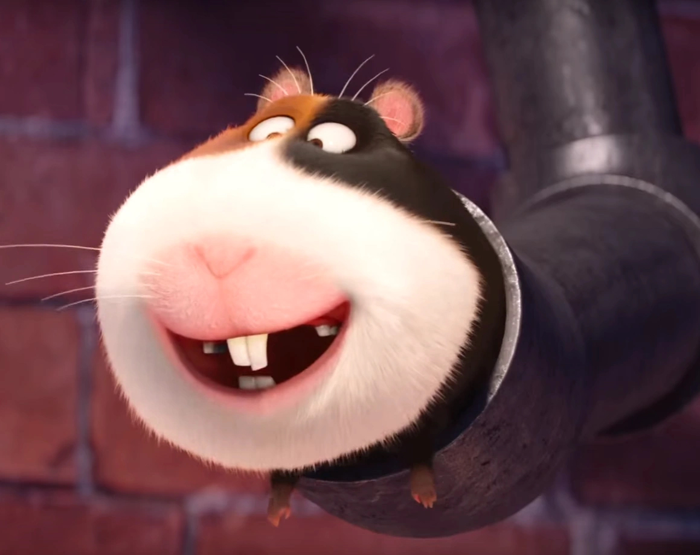
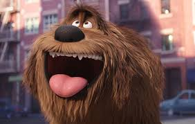
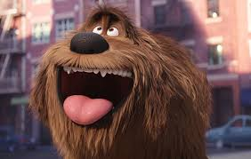
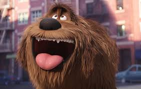
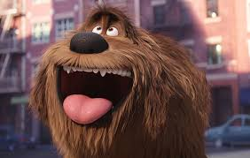
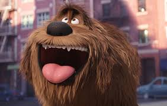
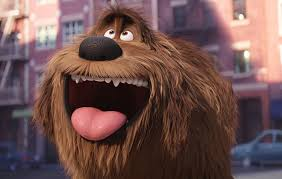
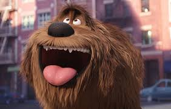

Find Your Ideal Pet
1. How much space do you have for a pet?
Very limited space (e.g., apartment)
Moderate space (e.g., small house)
Large space (e.g., spacious house with yard)
2. How much time can you dedicate to exercising your pet?
Very little time
Some time each day
A lot of time for daily exercise
3. How important is ease of grooming to you?
Very important (prefer low-maintenance pets)
Somewhat important (willing to groom regularly)
Not important (willing to invest time in grooming)
4. What noise level is acceptable to you?
Prefer a quiet pet
Moderate noise is okay
Don’t mind loud noises
5. How much interaction do you want from your pet?
Prefer a more independent pet
Moderate interaction (some playtime and attention)
Very interactive and affectionate pet
Find My Ideal Pet
Register for Adoption
Name:
Age:
Email:
Phone number:
Submit


 




